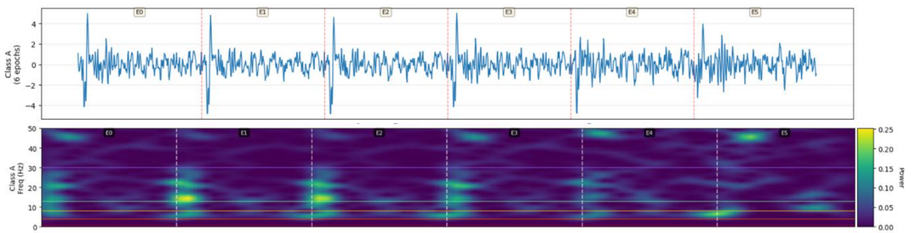
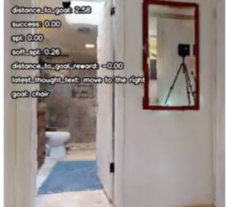
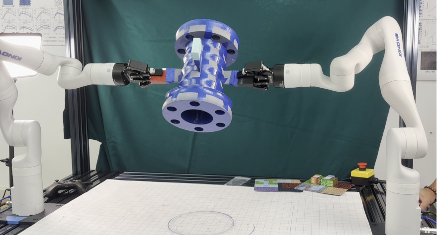
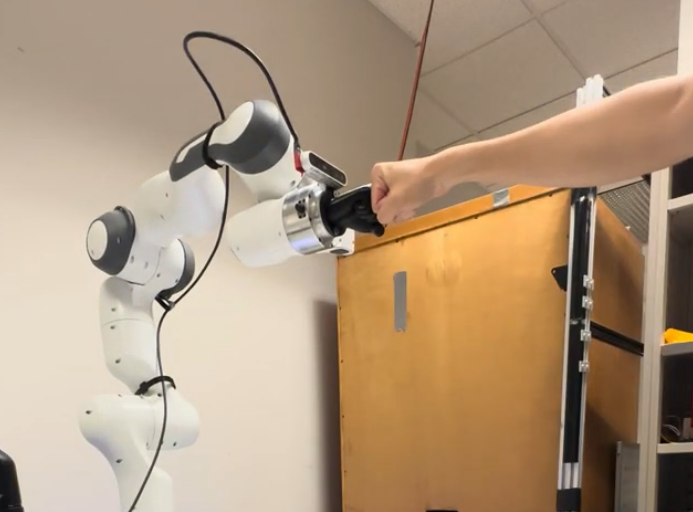

Megan Minju LeeHi! I'm a Master's student in Robotic Systems Development (MRSD) at Carnegie Mellon University, where I focus on the intersection of planning, control, and learning. My professional background includes a Software Engineering internship at Rivian and time as a Senior Software Test Engineer at Boston Dynamics, where I worked on scaling software stability and field deployments for the Stretch warehouse robot. Currently, I'm exploring how Reinforcement Learning and Vision-Language Models (VLAs) can push the boundaries of robot manipulation and navigation. Whether I am architecting bimanual systems for complex object manipulation or developing hierarchical models for long-horizon tasks, I love the challenge of bridging high-level perception with robust, low-level control. My goal is to build intelligent, scalable systems that allow robots to navigate and interact with the messiness of the real world. |

|
Projects
|  |
AdaptiveSCALE: A Hybrid Attention Framework for Cross-Subject EEG GeneralizationAdaptive SCALE-Net architecture improves cross-subject generalization in brain-computer interfaces by using an attention mechanism to dynamically weight more consistent spectral features against temporal signals, significantly reducing the need for individual user calibration. |
|  |
VLM-Guided Subgoal Planning for Indoor Navigation in Habitat-LabImprove robot navigation efficiency and success rates in the Habitat simulator by integrating a "Think" action that allows PPO-based reinforcement learning policies to leverage Vision-Language Models for generating semantic subgoals. |
|  |
CAPSTONE: Multi Agent Geometric Inspection and ClassificationBimanual manipulation system designed to perform active inspection through coordinated motion and 3D reconstruction. |
|  |
Bumpkin: A Fist-Bumping Robot CompanionRobot arm that can identify when a human wishes to fist bump, track the closest fist, continuously tracks the target motion with the use of dynamic trajectory execution, and proceeds to bump when the fist is within a threshold distance from the tracked fist. |

|
Nonlinear Trajectory Optimization for Multiple Robot ArmsCentralized multi-robot offline planner set up as a trajectory optimization problem. Given a set of kinematic collision-free paths for each robot, the controller tries to optimize a safe, smooth, and dynamically feasible local trajectory that can be directly executed on all robots online using DIRCOL and ALTRO. |